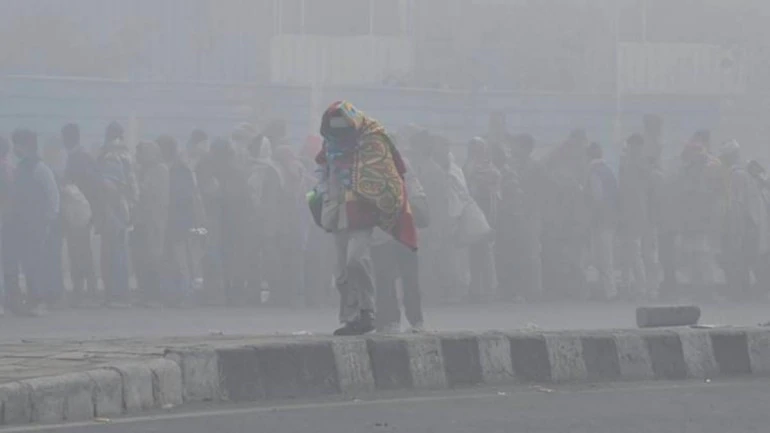

All the news~ The right price
re you planning to go on a cruise anytime soon? Have you packed your bags and are all set to have a great vacation? We would recommend that you read the 'Know Before You Go' part of the website. Especially the 'What to wear' part.
Why are we saying that?
Carnival Cruise line has banned any form of clothing or accessories that contains graphic messages or are not family-friendly. These new rules are requesting customers to wear clothes and accessories that are not offensive to other people on the cruise.
A spokesperson from the cruise line told People magazine,
"At Carnival, we want to make sure that all of our guests feel comfortable when cruising with us, and
that includes being around guests wearing clothing with inappropriate or threatening images ."
he Halwara town in Punjab on fri recorded a low of 0.3*c as renewed cold wave conditions were witnessed across the plains of Punjab and Haryana over the past 24 hours despite sunny conditions, (IMD) said.The minimum temperatures were one to five degrees below normal at most places.Hisar and Narnaul in Haryana recorded lows of 1.1 and 1.5 degrees Celsius, respectively.
he Supreme Court observed Friday that the Centre's actions in Kashmir weren't justified by an excuse or reason of emergency. The top court asked the territory's government to publish all orders on Internet suspension and travel restrictions to enable legal challenges. The minimum temperatures were one to five degrees below normal at most places. It also asked for a review of all orders on unlawful assembly (Section 144) and Internet suspension within seven days, followed by weekly periodic reviews.